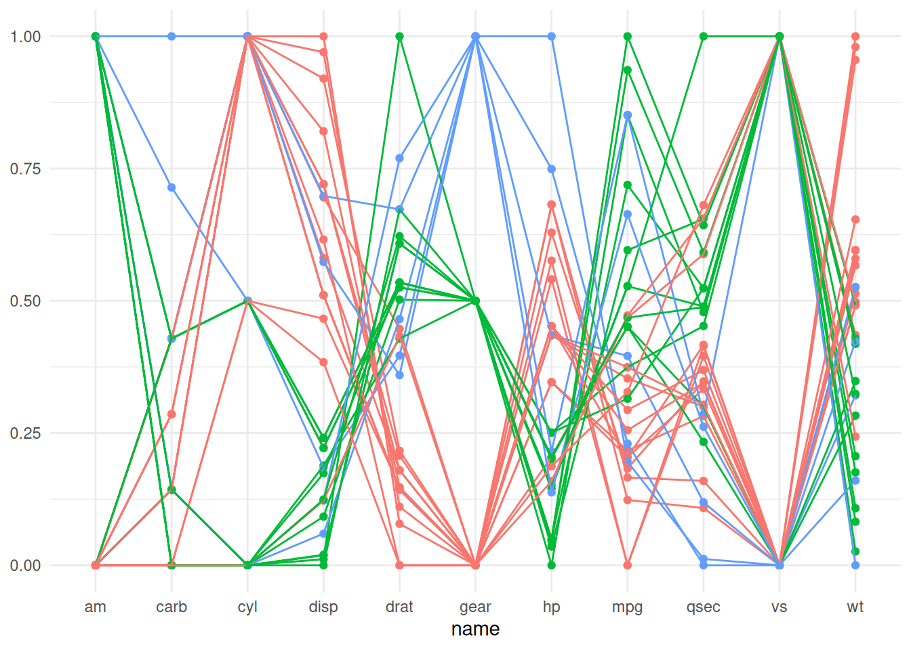
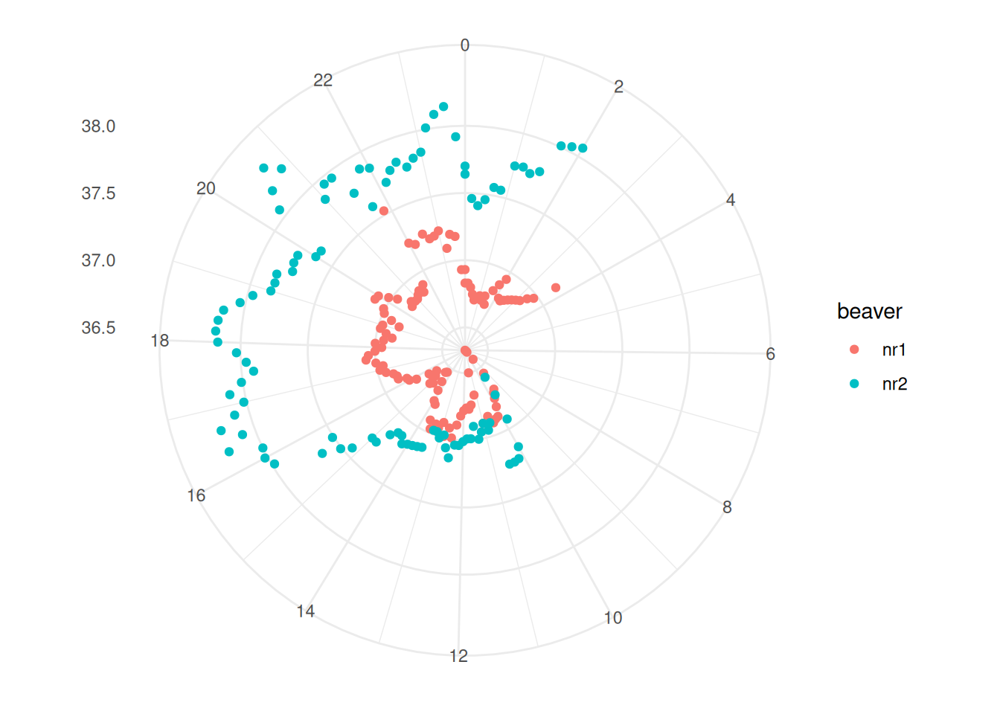
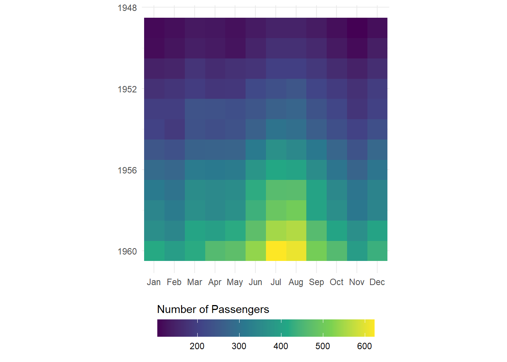

library("dplyr")
library("tidyr")
library("ggplot2")Infovis 2: Übung optional
In dieser Übung bauen wir einige etwas unübliche Plots aus der Vorlesung nach. Dafür verwenden wir Datensätze, die in R bereits integriert sind. Eine Liste dieser Datensätze findet man hier oder mit der Hilfe ?datasets.
Dazu verwenden wir nach wie vor ggplot2, aber mit einigen Tricks.
Aufgabe 1: Parallel coordinate plots
Erstelle einen parallel coordinate plot. Dafür eignet sich der integrierte Datensatz mtcars. Extrahiere die Fahrzeugnamen mit rownames_to_column.
Zudem müssen die Werte jeweiles auf eine gemeinsame Skala normalisiert werden. Hierfür kannst du die Funktion scales::rescale verwenden.
Musterlösung
mtcars2 <- mtcars |>
tibble::rownames_to_column("car") |>
pivot_longer(-car)
mtcars2 <- mtcars2 |>
group_by(name) |>
mutate(value_scaled = scales::rescale(value))| mpg | cyl | disp | hp | drat | wt | qsec | vs | am | gear | carb | |
|---|---|---|---|---|---|---|---|---|---|---|---|
| Mazda RX4 | 21.0 | 6 | 160 | 110 | 3.90 | 2.620 | 16.46 | 0 | 1 | 4 | 4 |
| Mazda RX4 Wag | 21.0 | 6 | 160 | 110 | 3.90 | 2.875 | 17.02 | 0 | 1 | 4 | 4 |
| Datsun 710 | 22.8 | 4 | 108 | 93 | 3.85 | 2.320 | 18.61 | 1 | 1 | 4 | 1 |
| Hornet 4 Drive | 21.4 | 6 | 258 | 110 | 3.08 | 3.215 | 19.44 | 1 | 0 | 3 | 1 |
| Hornet Sportabout | 18.7 | 8 | 360 | 175 | 3.15 | 3.440 | 17.02 | 0 | 0 | 3 | 2 |
| Valiant | 18.1 | 6 | 225 | 105 | 2.76 | 3.460 | 20.22 | 1 | 0 | 3 | 1 |
So sieht der fertige Plot aus:
Musterlösung
mtcars2 <- mtcars2 |>
group_by(car) |>
mutate(gear = value[name == "gear"])
ggplot(mtcars2, aes(name, value_scaled, group = car, color = factor(gear))) +
geom_point() +
geom_line() +
theme_minimal() +
theme(legend.position = "none", axis.title.y = element_blank())
Aufgabe 2: Polar Plot mit Biber Daten
Polar Plots eignen sich unter anderem für Daten, die zyklischer Natur sind, wie zum Beispiel zeitlich geprägte Daten (Tages-, Wochen-, oder Jahresrhythmen). Aus den Beispiels-Datensätzen habe ich zwei Datensätze gefunden, die zeitlich geprägt sind:
Beide Datensätze müssen noch etwas umgeformt werden, bevor wir sie für einen Radialplot verwenden können. In Aufgabe 2 verwenden wir die Biber-Datensätze, in der nächsten Aufgabe (3) die Passagier-Daten.
Wenn wir die Daten von beiden Bibern verwenden wollen, müssen wir diese noch zusammenfügen.
Musterlösung
beaver1_new <- beaver1 |>
mutate(beaver = "nr1")
beaver2_new <- beaver2 |>
mutate(beaver = "nr2")
beaver_new <- rbind(beaver1_new, beaver2_new)Zudem müssen wir die Zeitangabe noch anpassen: Gemäss der Datenbeschreibung handelt es sich bei der Zeitangabe um ein sehr programmier-unfreundliches Format. 3:30 wird als “0330” notiert. Wir müssen diese Zeitangabe, noch in ein Dezimalsystem umwandeln.
Musterlösung
beaver_new <- beaver_new |>
mutate(
hour_dec = (time / 100) %/% 1, # Ganze Stunden (mittels ganzzaliger Division)
min_dec = (time / 100) %% 1 / 0.6, # Dezimalminuten (15 min wird zu 0.25, via Modulo)
hour_min_dec = hour_dec + min_dec # Dezimal-Zeitangabe (03:30 wird zu 3.5)
)So sieht der fertige Plot aus:
Musterlösung
# Lösung Aufgabe 2
beaver_new |>
ggplot(aes(hour_min_dec, temp, color = beaver)) +
geom_point() +
scale_x_continuous(breaks = seq(0, 23, 2)) +
coord_polar() +
theme_minimal() +
theme(axis.title = element_blank())
Aufgabe 3: Raster Visualisierung mit Flugpassagieren
Analog Aufgabe 2, dieses Mal mit dem Datensatz AirPassengers
AirPassengers kommt in einem Format daher, das ich selbst noch gar nicht kannte. Es sieht zwar aus wie ein data.frame oder eine matrix, ist aber von der Klasse ts.
Musterlösung
AirPassengers
## Jan Feb Mar Apr May Jun Jul Aug Sep Oct Nov Dec
## 1949 112 118 132 129 121 135 148 148 136 119 104 118
## 1950 115 126 141 135 125 149 170 170 158 133 114 140
## 1951 145 150 178 163 172 178 199 199 184 162 146 166
## 1952 171 180 193 181 183 218 230 242 209 191 172 194
## 1953 196 196 236 235 229 243 264 272 237 211 180 201
## 1954 204 188 235 227 234 264 302 293 259 229 203 229
## 1955 242 233 267 269 270 315 364 347 312 274 237 278
## 1956 284 277 317 313 318 374 413 405 355 306 271 306
## 1957 315 301 356 348 355 422 465 467 404 347 305 336
## 1958 340 318 362 348 363 435 491 505 404 359 310 337
## 1959 360 342 406 396 420 472 548 559 463 407 362 405
## 1960 417 391 419 461 472 535 622 606 508 461 390 432
class(AirPassengers)
## [1] "ts"Damit wir den Datensatz verwenden können, müssen wir ihn zuerst in eine matrix umwandeln. Wie das geht habe ich hier erfahren.
Musterlösung
AirPassengers2 <- tapply(AirPassengers, list(year = floor(time(AirPassengers)), month = month.abb[cycle(AirPassengers)]), c)
AirPassengers2
## month
## year Apr Aug Dec Feb Jan Jul Jun Mar May Nov Oct Sep
## 1949 129 148 118 118 112 148 135 132 121 104 119 136
## 1950 135 170 140 126 115 170 149 141 125 114 133 158
## 1951 163 199 166 150 145 199 178 178 172 146 162 184
## 1952 181 242 194 180 171 230 218 193 183 172 191 209
## 1953 235 272 201 196 196 264 243 236 229 180 211 237
## 1954 227 293 229 188 204 302 264 235 234 203 229 259
## 1955 269 347 278 233 242 364 315 267 270 237 274 312
## 1956 313 405 306 277 284 413 374 317 318 271 306 355
## 1957 348 467 336 301 315 465 422 356 355 305 347 404
## 1958 348 505 337 318 340 491 435 362 363 310 359 404
## 1959 396 559 405 342 360 548 472 406 420 362 407 463
## 1960 461 606 432 391 417 622 535 419 472 390 461 508Aus der matrix muss noch ein Dataframe her, zudem müssen wir aus der breiten Tabelle eine lange Tabelle machen.
Musterlösung
AirPassengers3 <- AirPassengers2 |>
as.data.frame() |>
tibble::rownames_to_column("year") |>
pivot_longer(-year, names_to = "month", values_to = "n") |>
mutate(
# ich nutze einen billigen Trick um ausgeschriebene Monate in Nummern umzuwandeln
month = factor(month, levels = month.abb, ordered = T),
month_numb = as.integer(month),
year = as.integer(year)
)So sieht der fertige Plot aus:
Musterlösung
ggplot(AirPassengers3, aes(month, year, fill = n)) +
geom_raster() +
scale_y_reverse() +
scale_fill_viridis_c(guide = guide_colourbar(barwidth = 15, title.position = "top")) +
theme_minimal() +
labs(fill = "Anzahl Passagiere") +
coord_equal() +
theme(axis.title = element_blank(), legend.position = "bottom")